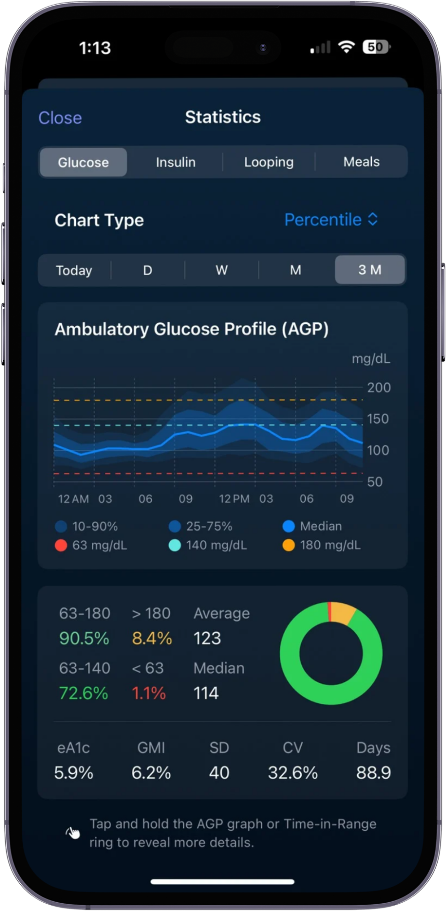
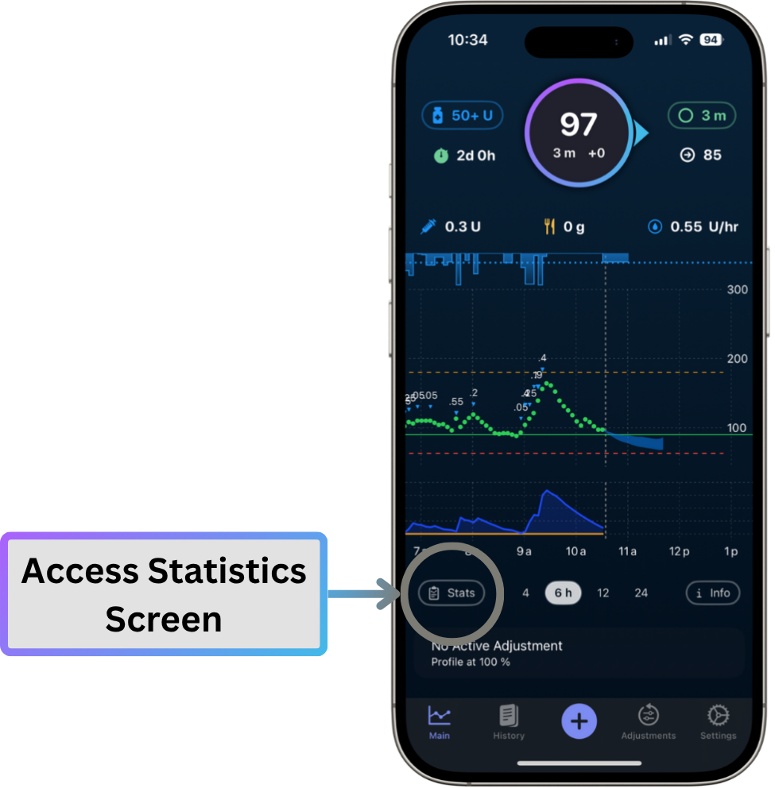
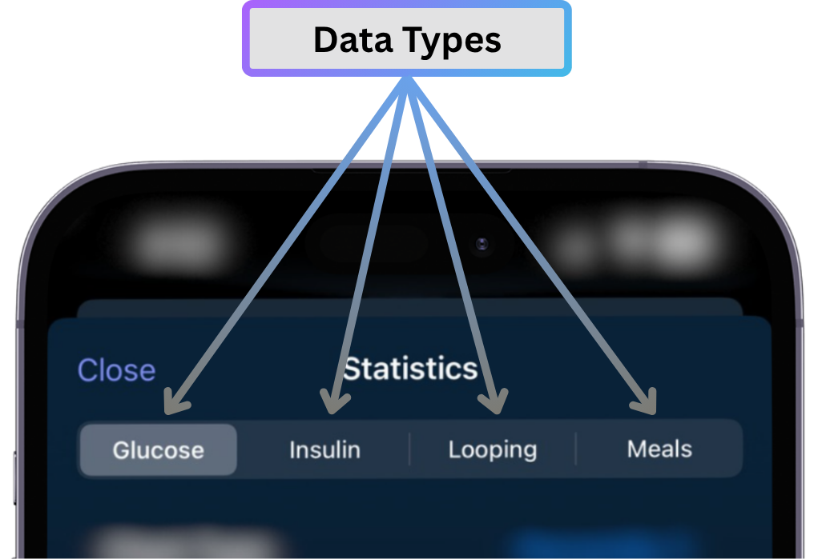
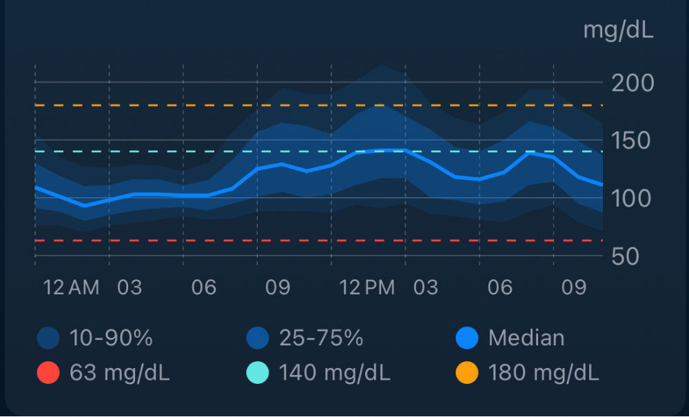
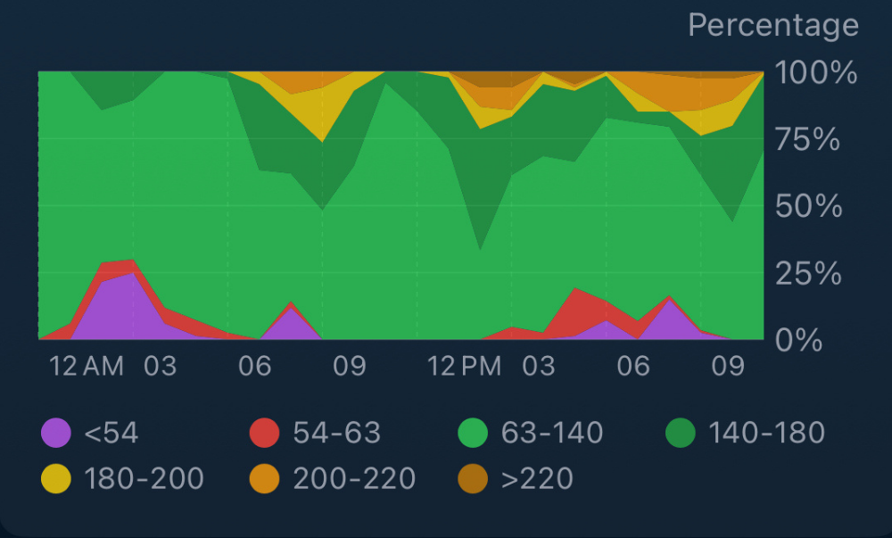
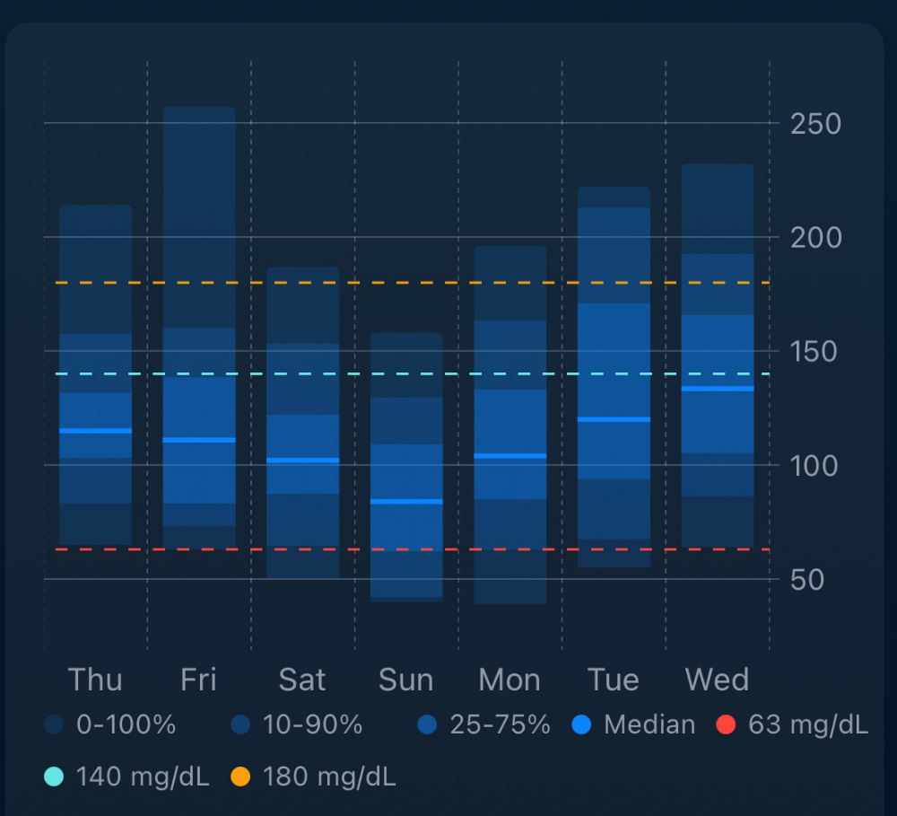
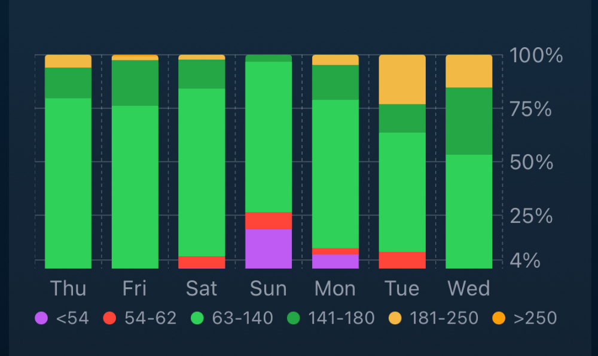

Statistics
Trio's Statistics feature provides comprehensive data analysis and visualization of your diabetes management metrics. View detailed glucose patterns, insulin usage, loop performance, and meal data across multiple time periods.

Accessing Statistics
-
To view statistics:
- Open Trio
- Navigate to the Statistics screen (icon in the navigation menu)
- Select a category tab (Glucose, Insulin, Looping, or Meals)
- Choose your preferred chart type and time period
-

Data Types
The Statistics screen is organized into four main categories, each accessible via tabs at the top:

- Glucose - CGM & blood sugar metrics, time-in-range, and glucose distribution
- Insulin - Total daily dose and bolus distribution
- Looping - Loop cycle performance and reliability metrics
- Meals - Macronutrient tracking and meal analysis
Each category offers multiple chart types and time period options to help you understand patterns and make informed adjustments to your therapy settings.
Glucose Statistics
Available Metrics
The Glucose section displays seven key metrics:
| Metric |
Description |
Formula |
| eA1c |
Estimated A1c from CGM data |
mg/dL: |
| GMI |
Glucose Management Indicator |
|
| Average |
Mean of all glucose readings |
|
| Median |
50th percentile glucose value |
Middle value when sorted |
| SD |
Standard Deviation (glucose variability) |
|
| CV |
Coefficient of Variation |
|
| Days |
Number of days with glucose data |
Count of unique dates |
Display Units
- eA1c: Available as % (NGSP) or mmol/mol (IFCC)
- GMI: Available as % or mmol/mol
- Glucose values: Displayed in mg/dL or mmol/L based on your settings
Chart Types
1. Percentile by Time (AGP - Ambulatory Glucose Profile)

The default view shows hourly glucose percentiles across 24 hours:
- Dark band: 25th-75th percentile (middle 50% of values)
- Light band: 10th-90th percentile (middle 80% of values)
- Center line: Median (50th percentile)
- Reference lines: Your configured low, target, and high thresholds
This chart helps identify:
- Time-of-day patterns (dawn phenomenon, overnight lows, etc.)
- Glucose variability at specific times
- How tightly controlled your glucose is
2. Distribution by Time
Shows the percentage of time spent in each glucose range for every hour of the day:

Ranges displayed:
- Purple: < 54 mg/dL (< 3 mmol/L)
- Red: 54-70 mg/dL (3-3.9 mmol/L)
- Bright Green: 70-140 mg/dL (3.9-7.8 mmol/L)
- Dark Green: 140-180 mg/dL (7.8-10 mmol/L)
- Yellow: 180-200 mg/dL (10-11.1 mmol/L)
- Orange: 200-220 mg/dL (11.1-12.2 mmol/L)
- Dark Orange: > 220 mg/dL (> 12.2 mmol/L)
Use this to identify times when you're most likely to be out of range.
3. Percentile by Day
Box plot showing daily glucose distribution:

- Each day shows a box-and-whisker plot
- Box represents 25th-75th percentile
- Whiskers extend to 10th and 90th percentiles
- Center line is the median
- Compare day-to-day variability
4. Distribution by Day

Stacked bar chart showing the percentage of time in each range per day:
- See which days had optimal control
- Identify patterns across multiple days
- Useful for reviewing weekly trends
Distribution by Day uses the same color chart as the Distribution by Time chart.
TITR vs. TING
Trio supports two tighter TIR calculation methods:
Time in Tight Range (TITR)
- In Range: 70-140 mg/dL (3.9-7.8 mmol/L)
- Low: 54-70 mg/dL (3-3.9 mmol/L)
- Very Low: < 54 mg/dL (< 3 mmol/L)
Time in Normoglycemia (TING)
- In Range: 63-140 mg/dL (3.5-7.8 mmol/L)
- Low: 54-63 mg/dL (3-3.5 mmol/L)
- Very Low: < 54 mg/dL (< 3 mmol/L)
You can select your preferred method in the Statistics settings.
TIR Goals
The American Diabetes Association recommends:
- > 70% time in range (70-180 mg/dL or 3.9-10 mmol/L)
- < 25% time above range (>180 mg/dL or >10 mmol/L)
- < 4% time below 70 mg/dL or 3.9 mmol/L
- < 1% time below 54 mg/dL or 3 mmol/L
Time Periods
Select from five time period options:
- Today: From midnight to current time
- Day (D): Last 24 hours
- Week (W): Last 7 days
- Month (M): Last 30 days
- 3 Months (3M): Last 90 days
Insulin Statistics
Chart Types
Total Daily Dose (TDD)
View your insulin usage broken down by type:
Components:
- Manual Bolus: Insulin you delivered manually for meals/corrections
- SMB: Super Micro Boluses delivered automatically by Trio
- External: Insulin injections logged but not delivered by pump
- Temp Basal: Insulin from temporary basal rates (above scheduled)
- Scheduled Basal: Insulin from your scheduled basal profile
The TDD chart displays:
- Bar graph of total daily insulin
- Statistics panel showing totals and averages for the visible range
- Scrollable timeline to review historical data
Bolus Distribution
Detailed breakdown of bolus insulin types:
- Manual bolus totals
- SMB totals
- External insulin totals
- Average bolus amounts per period
Use this to understand:
- How much insulin comes from automatic vs. manual delivery
- SMB effectiveness and contribution to total insulin
- Bolus patterns over time
Time Periods
Choose from four time periods:
- Day (D): Last 24 hours (shows hourly breakdown)
- Week (W): Last 7 days
- Month (M): Last 30 days
- 3 Months (3M): Last 90 days
Looping Statistics
Track how reliably Trio is functioning:
| Metric |
Description |
| Loop Count |
Total number of loop cycles executed |
| Successful |
Number of successful completions |
| Failed |
Number of failed cycles |
| Success % |
Percentage of successful loops |
| Median Interval |
Typical time between loops (minutes) |
| Median Duration |
Typical loop execution time (seconds) |
| Glucose Count |
Number of CGM readings received |
| Days |
Days tracked |
Chart Types
Bar chart showing loop execution over time:
- Green bars: Successful loops
- Red bars: Failed loops
- Hover/tap for detailed counts per time period
- Scrollable timeline
Use this to identify:
- Times when loops frequently fail
- CGM connection issues
- Overall system reliability
Time Periods
Same as glucose statistics:
- Today, Day (D), Week (W), Month (M), 3 Months (3M)
Good Loop Performance
You should typically see:
- Loop interval: 5-6 minutes (Trio loops every 5 minutes normally)
- Success rate: > 95%
- Failures usually indicate CGM or pump connectivity issues
Meal Statistics
Macronutrient Tracking
View your nutritional intake over time:
Macros tracked:
- Carbohydrates: Total grams per period
- Fat: Total grams per period
- Protein: Total grams per period
The meal chart displays:
- Bar graph showing daily or hourly totals
- Breakdown by macronutrient type
- Scrollable timeline
- Date range label
FPU (Fat Protein Units) Support
If FPU conversion is enabled in settings, Trio tracks fat and protein to calculate their insulin impact for low-carb meals.
Time Periods
Same as insulin statistics:
- Day (D), Week (W), Month (M), 3 Months (3M)
Note
Meal statistics only include carbs, fat, and protein that you've logged in Trio. Accurate logging is essential for useful meal statistics.
Customization Options
Time-in-Range Type:
- Select TITR (Time in Tight Range) or TING (Time in Normoglycemia)
- Changes the range definitions for TIR calculations
Found under User Interface in Features settings
eA1c/GMI Display:
- Percentage (NGSP format)
- mmol/mol (IFCC format)
Found under User Interface in Features settings
Glucose Units:
Found under Units and Limits in Therapy Settings
Target Ranges:
- High Limit: Default 180 mg/dL (customizable)
- Low Limit: Default 70 mg/dL (customizable)
These limits affect the color coding and range calculations in all glucose charts.
Found under User Interface, Low and High Thresholds, in Features Settings
Understanding Your Statistics
Glucose Variability
Standard Deviation (SD):
- Low SD (< 30 mg/dL): Stable, consistent glucose
- Moderate SD (30-50 mg/dL): Some variability
- High SD (> 50 mg/dL): Significant swings
Coefficient of Variation (CV):
- Target: < 36%
- CV < 36% indicates well-controlled glucose variability
- CV > 36% suggests unpredictable glucose patterns
Improving CV and SD
High variability often indicates:
- Inaccurate carb counting
- Incorrect ISF or carb ratios
- Inconsistent meal timing
- Exercise without appropriate adjustments
GMI vs. eA1c
Both provide estimates of your average glucose management:
- eA1c: Calculated from average glucose using the ADAG formula
- GMI: Similar calculation, recommended by international consensus
These are estimates based on CGM data, not laboratory A1c measurements. They correlate well but may differ from lab results.
TDD Trends
Monitoring your Total Daily Dose helps you understand:
- Increasing TDD: May indicate insulin resistance, weight gain, or illness
- Decreasing TDD: May indicate increased sensitivity, weight loss, or more activity
- Stable TDD: Consistent insulin needs
Significant TDD changes should prompt review of your basal rates, ISF, carb ratios, and Dynamic ISF Settings.
Loop Reliability
High loop success rates (> 95%) indicate:
- Good CGM connectivity
- Reliable pump communication
- Stable Trio operation
Frequent loop failures warrant investigation:
- Check CGM sensor placement and transmitter battery
- Verify pump is in range and functioning
- Review phone battery and background app settings
Data Availability
Statistics are calculated from data stored in Trio's database:
- Glucose: Requires CGM data
- Insulin: Requires pump event history
- Looping: Requires loop execution records
- Meals: Requires logged carb entries
If you've recently started using Trio or reset your data, some statistics may not be available until sufficient data accumulates.
Minimum data for meaningful statistics:
- 1 day: Today and Day views
- 7 days: Week view
- 30 days: Month view
- 90 days: 3 Month view
Statistics calculations can be intensive for large datasets. Trio uses several optimizations:
- Caching: Frequently accessed calculations are cached
- Background processing: Heavy calculations run in background threads
- Pagination: Charts load data in scrollable segments
- Concurrent calculations: Multiple statistics computed in parallel
You may notice a brief delay when first opening Statistics or switching time periods on older devices. This is normal and ensures the UI remains responsive.
Troubleshooting
"No data available" Message
If you see this message:
- Check data source: Ensure you have CGM data (for glucose), logged carbs (for meals), etc.
- Verify time period: Try a shorter time period if you recently started using Trio
- Restart Trio: Sometimes refreshing the app resolves data loading issues
Statistics Don't Match Other Apps
Small differences are normal due to:
- Different calculation methods (mean vs. median)
- Different time period boundaries
- Different range definitions
- Data filtering (Trio may exclude some invalid readings)
Large discrepancies should be investigated—verify your data is syncing correctly.
If statistics load slowly:
- Reduce time period: Use Day or Week instead of 3 Months
- Clear app cache: Settings > Advanced (if available)
- Update Trio: Ensure you're running the latest version
- Device storage: Free up space on your iPhone
Summary
Trio's Statistics feature provides powerful insights into your diabetes management:
- Glucose Statistics: Understand your time-in-range, variability, and patterns
- Insulin Statistics: Monitor your TDD and bolus distribution
- Loop Statistics: Track system reliability and performance
- Meal Statistics: Review your macronutrient intake
Use these statistics to:
- Identify patterns and trends
- Make informed adjustments to therapy settings
- Share data with your healthcare team
- Track progress toward your diabetes management goals
Regularly reviewing your statistics helps ensure Trio is working optimally and your settings remain accurate as your insulin needs change.